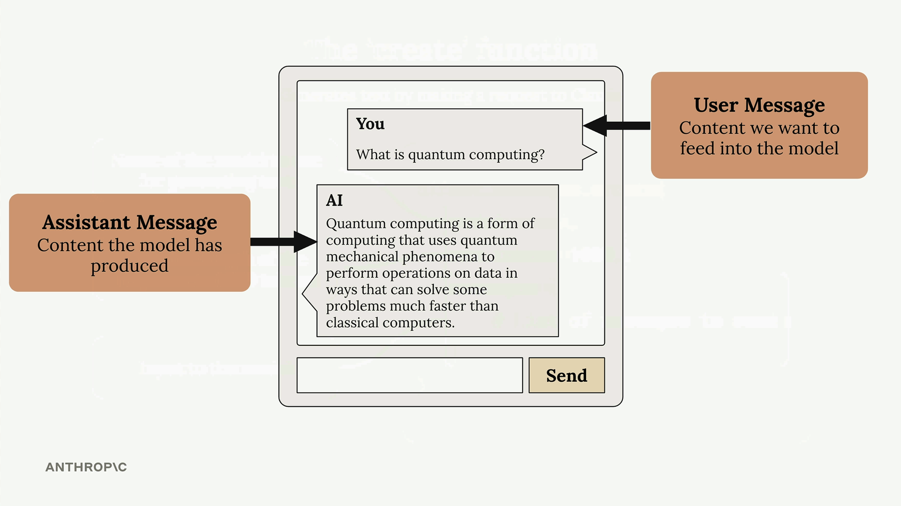

Первый запрос
Чему научитесь
Видео 6:02 и текст урока
К концу урока вы сможете:
- поставить пакеты и безопасно подключить ключ через
.env; - вызвать
client.messages.create()с тремя обязательными параметрами; - достать текст ответа из
message.content[0].text.
Видео и текст урока.
Смотреть урок на Skilljar Making a request · 6:02Сделать первый запрос к Anthropic API несложно, если понимать базовую настройку и структуру. Эта инструкция проходит по основным шагам, чтобы Claude начал отвечать на ваши промпты из Python.
Настройка окружения
Прежде чем вызывать API, нужно поставить пакеты и безопасно настроить API-ключ.
Сначала установите зависимости в Jupyter-ноутбуке:
%pip install anthropic python-dotenv
Затем создайте файл .env в той же папке, что и ноутбук, и сохраните в нём ключ:
ANTHROPIC_API_KEY="your-api-key-here"
Так ключ не попадает в код, и его не получится случайно закоммитить в систему контроля версий. Всегда добавляйте .env в .gitignore.
Загрузите переменные окружения и создайте клиент API:
from dotenv import load_dotenv load_dotenv() from anthropic import Anthropic client = Anthropic() model = "claude-sonnet-4-0"
Функция create
Основа запросов к API — функция client.messages.create(). У неё три обязательных параметра:

client.messages.create() и три его обязательных параметра.model— имя модели Claude, которую вы хотите использовать;max_tokens— страховочный лимит длины ответа (не целевая длина);messages— история разговора, которую вы отправляете Claude.
Параметр max_tokens работает как предохранитель. Если поставить 1000, Claude остановится после 1000 токенов, даже если хотел сказать больше. Claude не старается дотянуть до этого лимита: он пишет столько, сколько считает нужным, и останавливается, только если упрётся в максимум.
Что такое messages
Сообщения — это переписка между вами и Claude, как в чате. Сообщения бывают двух типов:

- сообщения пользователя (user) — то, что вы отправляете Claude (пишут люди);
- сообщения ассистента (assistant) — ответы, которые сгенерировал Claude.
Каждое сообщение — словарь с ключами role ("user" или "assistant") и content (сам текст).
Первый запрос
Полный пример запроса к Claude:
message = client.messages.create(
model=model,
max_tokens=1000,
messages=[
{
"role": "user",
"content": "What is quantum computing? Answer in one sentence"
}
]
)
Когда вы запустите этот код, Claude обработает запрос и вернёт объект ответа: сгенерированный текст плюс метаданные о запросе.
Как достать ответ
В объекте ответа много информации, но обычно нужен только сгенерированный текст. Он лежит здесь:
message.content[0].text
Получится чистый читаемый текст вроде: «Quantum computing is a type of computation that leverages quantum mechanics principles like superposition and entanglement to process information using quantum bits (qubits), potentially solving certain complex problems exponentially faster than classical computers.»
С этими основами можно экспериментировать с разными промптами и строить более сложные сценарии работы с Claude.
Дальше
Один вызов — ещё не разговор. Следующий урок показывает, почему историю диалога приходится хранить самим.
Оригинал урока: Making a request.